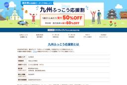
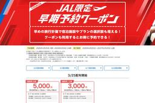
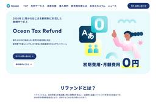
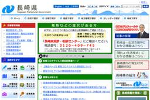

TRAICY（トライシー）
https://www.traicy.com/
TRAICY（トライシー）は、航空・LCC・鉄道・ホテル・ゲストハウス・バックパッカーズの最新情報を発信している、日本最大級のトラベルメディアです。
フィード
JALUX、「JALオリジナル ボンボンドロップシール」予約販売を9月16日再開
TRAICY（トライシー）
JALUXは、オンラインショッピングモール「JAL Mall」で「JALオリジナル ボンボンドロップシール」の予約販売を、9月16日に再開する。 商品は2柄セットで、JALショッピング公式LINEの友だち限定で扱う。予約 […]投稿 JALUX、「JALオリジナル ボンボンドロップシール」予約販売を9月16日再開 は TRAICY（トライシー） に最初に表示されました。
5時間前

じゃらんnet、「九州ふっこう応援割」販売再開 熊本県対象
TRAICY（トライシー）
リクルートは、旅行予約サイト「じゃらんnet」で、旅行支援「九州ふっこう応援割」の販売を、9月16日午前10時から再開する。 対象となるのは熊本県で、宿泊期間は10月1日から12月25日（翌日チェックアウト）まで。宿泊単 […]投稿 じゃらんnet、「九州ふっこう応援割」販売再開 熊本県対象 は TRAICY（トライシー） に最初に表示されました。
5時間前
宮崎県、「九州ふっこう応援割～みやざき割キャンペーン～」を設定 10月1日〜12月25日宿泊分
TRAICY（トライシー）
宮崎県は、政府による旅行支援「九州ふっこう応援割」による「九州ふっこう応援割～みやざき割キャンペーン～」を、10月1日から12月25日宿泊分を対象に設定する。 九州ふっこう応援割は、九州地方における1泊以上の旅行・宿泊商 […]投稿 宮崎県、「九州ふっこう応援割～みやざき割キャンペーン～」を設定 10月1日〜12月25日宿泊分 は TRAICY（トライシー） に最初に表示されました。
7時間前
ANA X、徳島旅行で使える「AWA旅クーポン」配布 最大40,000円割引
TRAICY（トライシー）
ANA Xは、ANAトラベラーズで「徳島で休んでく？ANAでAWA旅 クーポン」を9月2日から2027年2月28日まで提供している。 東京/羽田～徳島を結ぶ航空券と、県内の宿泊を組み合わせた旅程、または県内のホテルのみの […]投稿 ANA X、徳島旅行で使える「AWA旅クーポン」配布 最大40,000円割引 は TRAICY（トライシー） に最初に表示されました。
9時間前
マカオ航空、福岡〜マカオ線を期間運航 冬スケジュール期間中に最大週4往復
TRAICY（トライシー）
マカオ航空は、福岡〜マカオ線を冬スケジュール期間中に期間運航する。 12月18日から2027年1月3日は月・水・金・日曜の週4往復、2月1日から12日は月・水・金曜の週3往復を運航する。機材はエアバスA320型機（ビジネ […]投稿 マカオ航空、福岡〜マカオ線を期間運航 冬スケジュール期間中に最大週4往復 は TRAICY（トライシー） に最初に表示されました。
10時間前
フォートナム・アンド・メイソン、日本初のティースタンド グランスタ東京に9月16日オープン
TRAICY（トライシー）
フォートナム・アンド・メイソンは、フォートナム・アンド・メイソン グランスタ東京店を9月16日午前10時にリニューアルオープンする。 同店は1月から改装を行なっており、新たに日本初となるティースタンドを併設する。グローサ […]投稿 フォートナム・アンド・メイソン、日本初のティースタンド グランスタ東京に9月16日オープン は TRAICY（トライシー） に最初に表示されました。
11時間前
アシアナ航空、12月17日から大韓航空便名に変更 11月2日から順次移管
TRAICY（トライシー）
大韓航空は、アシアナ航空との統合に向けた準備を本格化する。従来のアシアナ航空便は、12月17日以降の出発便から大韓航空の便名に変更となる。 便名の変更とシステムデータの移行は、11月2日から12月3日にかけて順次実施する […]投稿 アシアナ航空、12月17日から大韓航空便名に変更 11月2日から順次移管 は TRAICY（トライシー） に最初に表示されました。
11時間前
キャセイパシフィック航空、グーグルとAI活用の飛行機雲回避を実証 温暖化効果を約4割削減
TRAICY（トライシー）
キャセイパシフィック航空とグーグルは、飛行機雲が気候に与える影響に関する研究で提携した。 グーグルの飛行機雲対策は、AIによる予測モデル、衛星画像による検出、気象情報を組み合わせ、飛行機雲が発生しやすい空域を予測する。運 […]投稿 キャセイパシフィック航空、グーグルとAI活用の飛行機雲回避を実証 温暖化効果を約4割削減 は TRAICY（トライシー） に最初に表示されました。
12時間前

ヤフートラベル、「JAL限定早期予約クーポン」を追加配布 最大5,000円割引
TRAICY（トライシー）
LINEヤフーは、旅行予約サイト「Yahoo!トラベル（ヤフートラベル）」で、「JAL限定早期予約クーポン」の追加配布を9月15日から開始した。 日本航空（JAL）の航空券とホテルのセットプラン「ヤフーパック」が対象で、 […]投稿 ヤフートラベル、「JAL限定早期予約クーポン」を追加配布 最大5,000円割引 は TRAICY（トライシー） に最初に表示されました。
12時間前
エティハド航空、アブダビ〜レッドシー線を新規就航 10月4日から週1往復
TRAICY（トライシー）
エティハド航空は、アブダビ〜レッドシー線を10月4日に新規就航する。 日曜の週1往復で運航を開始し、10月25日からは木曜を追加した週2往復に増便する。機材はエアバスA320型機（ビジネスクラス8席、エコノミークラス15 […]投稿 エティハド航空、アブダビ〜レッドシー線を新規就航 10月4日から週1往復 は TRAICY（トライシー） に最初に表示されました。
13時間前

ONE-JAPAN観光ファンド、第1号案件でOceanに投資 免税のリファンド方式に対応
TRAICY（トライシー）
エイチ・アイ・エス（HIS）、ZUU Funders、日本アジア投資の3社が共同で設立したONE-JAPAN観光ファンド投資事業有限責任組合は、第1号投資案件として、リファンド型免税プラットフォーム「Ocean Tax […]投稿 ONE-JAPAN観光ファンド、第1号案件でOceanに投資 免税のリファンド方式に対応 は TRAICY（トライシー） に最初に表示されました。
14時間前
ANA、9月23日〜29日搭乗分「トクたびマイル」設定 東京〜大阪線が3,500マイルなど
TRAICY（トライシー）
全日本空輸（ANA）は、ANAマイレージクラブの国内線特典航空券を、通常より少ないマイル数で交換できる「今週のトクたびマイル」の、9月23日から29日まで搭乗分の対象路線を発表した。 予約・発券期間は9月16日から22日 […]投稿 ANA、9月23日〜29日搭乗分「トクたびマイル」設定 東京〜大阪線が3,500マイルなど は TRAICY（トライシー） に最初に表示されました。
15時間前
ボーイングとアメリカン航空、737 MAXで初のランディングギア交換
TRAICY（トライシー）
ボーイングとアメリカン航空は、ボーイング737 MAXで初となるランディングギアの交換を完了した。 ボーイングが従来から提供してきた「Landing Gear Exchange Program」を同型機に初めて適用する。 […]投稿 ボーイングとアメリカン航空、737 MAXで初のランディングギア交換 は TRAICY（トライシー） に最初に表示されました。
15時間前
タイガーエア・台湾、「12周年感謝祭」開催 片道600円から
TRAICY（トライシー）
タイガーエア・台湾は、「12周年感謝祭」を9月16日午前11時から18日まで開催する。 第1弾はtigerprime会員限定で9月16日午前11時から午後11時59分まで、第2弾は全員を対象に9月17日午前11時から18 […]投稿 タイガーエア・台湾、「12周年感謝祭」開催 片道600円から は TRAICY（トライシー） に最初に表示されました。
15時間前
東京で自動運転タクシーの商用化へ 2027年中に完全無人運行
TRAICY（トライシー）
GOとWaymo、日本交通の3社は、東京における自動運転タクシーの商用化に向けた戦略的パートナーシップに合意した。2027年中に東京で国内初となる自動運転レベル4の完全無人走行による商用タクシー運行を目指す。 3社は20 […]投稿 東京で自動運転タクシーの商用化へ 2027年中に完全無人運行 は TRAICY（トライシー） に最初に表示されました。
15時間前
LOTポーランド航空、ワルシャワ〜トリノ線を新規就航 2027年1月16日から週1往復
TRAICY（トライシー）
LOTポーランド航空は、ワルシャワ〜トリノ線を2027年1月16日に新規就航する。 土曜の週1往復を季節運航する。機材はボーイング737-8型機を使用する。所要時間はワルシャワ発、トリノ発ともに2時間15分。運航期間は3 […]投稿 LOTポーランド航空、ワルシャワ〜トリノ線を新規就航 2027年1月16日から週1往復 は TRAICY（トライシー） に最初に表示されました。
15時間前
じゃらんnet、「九州ふっこう応援割」販売開始 熊本・長崎県対象
TRAICY（トライシー）
リクルートは、旅行予約サイト「じゃらんnet」で、旅行支援「九州ふっこう応援割」の販売を、9月15日午前10時から開始した。 じゃらんnetでは、宿泊単体のみが対象となり、ダイナミックパッケージは対象外となる。宿泊期間は […]投稿 じゃらんnet、「九州ふっこう応援割」販売開始 熊本・長崎県対象 は TRAICY（トライシー） に最初に表示されました。
17時間前
アシアナ航空、スターリンクを9月15日から導入 無料で提供
TRAICY（トライシー）
アシアナ航空は、スペースXが提供する低軌道衛星通信サービス「スターリンク」による機内Wi-Fiサービス「Starlink機内Wi-Fiサービス」を9月15日に開始する。 エアバスA350-900型機9機とエアバスA330 […]投稿 アシアナ航空、スターリンクを9月15日から導入 無料で提供 は TRAICY（トライシー） に最初に表示されました。
19時間前
リーガロイヤルホテル大阪 ヴィニェット コレクション、ハロウィンテーマの秋限定グルメを販売
TRAICY（トライシー）
リーガロイヤルホテル大阪 ヴィニェット コレクションは、「秋の収穫祭」を10月1日から31日まで開催する。 ケーキは、シナモン香るパンプキンクリームを乗せたパンプキンタルト（756円）、紫いもとマスカルポーネやクリームチ […]投稿 リーガロイヤルホテル大阪 ヴィニェット コレクション、ハロウィンテーマの秋限定グルメを販売 は TRAICY（トライシー） に最初に表示されました。
20時間前
ヒルトン東京お台場、山梨県産シャインマスカットのアフタヌーンティー 9月15日から
TRAICY（トライシー）
ヒルトン東京お台場は、「シャインマスカットアフタヌーンティー」を9月15日から11月30日まで提供する。 スイーツは、シャインマスカットのショートケーキやシャンパンゼリー、ムース、シャインマスカットとブドウのタルト、ヴェ […]投稿 ヒルトン東京お台場、山梨県産シャインマスカットのアフタヌーンティー 9月15日から は TRAICY（トライシー） に最初に表示されました。
21時間前

じゃらんnet、「九州ふっこう応援割」を9月15日午前10時販売開始 長崎県対象
TRAICY（トライシー）
リクルートは、旅行予約サイト「じゃらんnet」で、旅行支援「九州ふっこう応援割」の長崎県の販売を、9月15日午前10時から開始する。 宿泊単体と交通手段と宿泊がセットになった「ダイナミックパッケージ」が対象となる。宿泊期 […]投稿 じゃらんnet、「九州ふっこう応援割」を9月15日午前10時販売開始 長崎県対象 は TRAICY（トライシー） に最初に表示されました。
1日前

ジャルパック、「かごしま観光応援割」の販売開始 最大60％オフ
TRAICY（トライシー）
ジャルパックは、鹿児島県による観光支援「南の宝箱 鹿児島 かごしま観光応援割」クーポンの販売を、9月14日から開始した。 割引率は60％で、割引上限は1人あたり2万円。予約・宿泊期間は9月15日から10月13日（翌日チェ […]投稿 ジャルパック、「かごしま観光応援割」の販売開始 最大60％オフ は TRAICY（トライシー） に最初に表示されました。
1日前
スプリング・ジャパン、冬スケジュールの追加販売を開始 国際線4路線・国内線2路線
TRAICY（トライシー）
スプリング・ジャパンは、冬スケジュールの追加便の販売を、9月4日午後3時から開始した。 対象となるのは、東京/成田〜上海/浦東・北京/首都・ハルビン・天津・広島・函館線の6路線。10月30日から12月20日にかけて、追加 […]投稿 スプリング・ジャパン、冬スケジュールの追加販売を開始 国際線4路線・国内線2路線 は TRAICY（トライシー） に最初に表示されました。
1日前

全国のJR線で3日間使える「秋の乗り放題パス」、10月3日〜18日に設定
TRAICY（トライシー）
JRグループは、全国のJR線の普通列車などが連続する3日間乗り降り自由の「秋の乗り放題パス」を10月3日から18日まで設定する。 期間中の連続する3日間、日本全国のJR線の普通・快速列車の普通車自由席とBRT（バス高速輸 […]投稿 全国のJR線で3日間使える「秋の乗り放題パス」、10月3日〜18日に設定 は TRAICY（トライシー） に最初に表示されました。
1日前
JAL、国際線のアメニティ・コスメキットを刷新 ファーストは「コスメデコルテ」と「ザ・ギンザ」採用
TRAICY（トライシー）
日本航空（JAL）は、国際線ファーストクラスのコスメキットとビジネスクラスのアメニティをリニューアルする。 ファーストクラスでは、従来の男性用・女性用の区分をやめ、ユニセックスのアイテムに変更する。日本発は「コスメデコル […]投稿 JAL、国際線のアメニティ・コスメキットを刷新 ファーストは「コスメデコルテ」と「ザ・ギンザ」採用 は TRAICY（トライシー） に最初に表示されました。
1日前
楽天トラベル、国内宿泊とレンタカーの予約・利用者に1,000ポイント還元
TRAICY（トライシー）
楽天トラベルは、国内宿泊とレンタカーを予約・利用した人を対象に、楽天ポイント1,000ポイントを還元するキャンペーンを9月1日午前10時から10月2日9時59分まで実施している。 国内宿泊は2025年9月1日以降の予約、 […]投稿 楽天トラベル、国内宿泊とレンタカーの予約・利用者に1,000ポイント還元 は TRAICY（トライシー） に最初に表示されました。
1日前
近畿日本ツーリスト、「かごしま観光応援割」の販売開始 最大60％オフ
TRAICY（トライシー）
近畿日本ツーリストは、鹿児島県による観光支援「南の宝箱 鹿児島 かごしま観光応援割」クーポンの配布受付を、9月14日から開始した。 割引率は60％で、割引上限は1人あたり2万円。泊数の制限はない。予約・宿泊期間は9月14 […]投稿 近畿日本ツーリスト、「かごしま観光応援割」の販売開始 最大60％オフ は TRAICY（トライシー） に最初に表示されました。
1日前
JAL、デリー行きで特別運賃 往復9万円台から
TRAICY（トライシー）
日本航空（JAL）は、デリー行きを対象とした特別運賃を、9月2日から10月31日まで販売する。 東京/成田発着の往復運賃は、エコノミークラスが99,000円から、ビジネスクラスが299,000円から。燃油サーチャージ込み […]投稿 JAL、デリー行きで特別運賃 往復9万円台から は TRAICY（トライシー） に最初に表示されました。
1日前
ジェットスター・ジャパン、エアバスA321LR型機を2機追加導入
TRAICY（トライシー）
ジェットスター・ジャパンは、エアバスA321LR型機を2機追加導入する。 10月以降、保有機材の更新に合わせて導入し、需要が旺盛な国内・国際線に投入する。 エアバスA321LRは従来型のエアバスA320ceoの長胴・長距 […]投稿 ジェットスター・ジャパン、エアバスA321LR型機を2機追加導入 は TRAICY（トライシー） に最初に表示されました。
1日前
天草エアライン、天草宿泊者向け応援運賃を設定 福岡線8,800円など
TRAICY（トライシー）
天草エアラインは、「天草宿泊応援運賃」を設定する。 熊本地震の影響を受けた天草地域の観光復興を支援するもの。天草市、上天草市、苓北町の宿泊施設を利用する天草島外の人が対象で、天草在住者は利用できない。販売座席数は500席 […]投稿 天草エアライン、天草宿泊者向け応援運賃を設定 福岡線8,800円など は TRAICY（トライシー） に最初に表示されました。
2日前